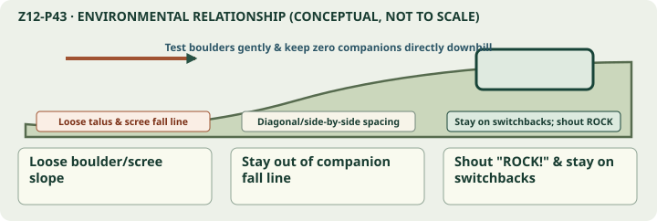

Z12-P43 · Extreme environments · New manuscript
Manage steep talus, loose scree and wet granite footing without triggering rockfall
Prevent slips, ankle fractures and knocking loose boulders down onto companions on steep rocky mountain trails.
When it applies · Alpine boulder fields (talus), loose gravel slopes (scree), slick wet rock slabs and canyon trails.
Equipment · Supportive lug-soled footwear, trekking poles where helpful and disciplined group spacing.

Actions
- Avoid unstable talus or routes with exposed people below when possible. Keep companions out of the fall line rather than clustering beneath unstable material.[X10, ED]
- Shout "ROCK!" loudly and instantly if ANY stone dislodges—people below should duck cleanly against uphill cover and protect their head rather than looking straight upward into the falling rock's path.[X10, T01, ED]
- Avoid wet lichen-covered granite slabs, steep snow-choked chutes without traction/training and shortcuts cutting off switchbacks (which erode trails and knock rocks onto hikers below).[X10, E22]
Failure recognition · Cutting across steep loose scree switchbacks directly above another hiking group and kicking a football-sized stone down the slope.[X10, E22, T01]
Verify · Confirm zero companions stand directly down the fall line below moving hikers and test footing deliberately on wet or loose rock.[X10, E11, ED]
Stop or change course · Active overhead rockfall, icy rock slabs without proper traction/training or an unstable cliff traverse stops forward travel—detour or turn back safely.[X10, E01]
Evidence and editorial notes
- E01 · Minnesota DNR · Safety in State Forests (current web edition)
- Section: Before your trip and while visiting · Conditions: State-forest travel and backcountry planning
Support: Know the route, check conditions, carry navigation and safety equipment and share trip details.
Limitations: Conditions and trail maintenance vary seasonally across forest units. · Conflicting evidence: None; aligns with NPS-H.
Editorial note: Foundation for trip planning and pre-departure risk checks. · Specialist reviewer: Land management and search and rescue
Primary source · checked 2026-11-24 - E11 · NPS · Hike Smart (current web edition)
- Section: Plan your hike; Stay together · Conditions: Groups on hiking routes
Support: Choose a route suited to the group's abilities and hike at a pace that keeps the group together.
Limitations: Fast hikers moving ahead at junctions is a leading driver of preventable separation. · Conflicting evidence: None; aligns with SAR prevention principles.
Editorial note: Core reference for group accountability and pacing cards. · Specialist reviewer: Group leaders and search and rescue
Primary source · checked 2026-11-24 - E22 · NPS · Leave No Trace Seven Principles (current web edition)
- Section: Principle 2 > Travel and Camp on Durable Surfaces · Conditions: Campsite selection and shelter setup on public lands
Support: Pitch shelters on established pads, rock, gravel, dry grass, or snow rather than fragile meadows or saturated shorelines; do not alter terrain or cut live vegetation for shelter frames.
Limitations: Deadfall shelter construction is inappropriate in high-use or protected zones except genuine life-safety emergencies. · Conflicting evidence: Restricts destructive improvised shelter building during routine trips.
Editorial note: Separates lawful low-impact practice from emergency improvised cover. · Specialist reviewer: Land management and wilderness ethics
Primary source · checked 2026-11-24 - T01 · American Red Cross · First Aid Steps (current web edition)
- Section: First Aid Steps > Check the scene; check the person · Conditions: Lay responder in United States; assess safety before contact
Support: Check scene safety, responsiveness, breathing and immediately life-threatening conditions.
Limitations: Lay guidance does not replace advanced clinical or rescue protocols. · Conflicting evidence: None; universal first-response opening gate.
Editorial note: Anchors scene-safety-first rule across Z01. · Specialist reviewer: EMS and wilderness medicine
Primary source · checked 2026-11-24 - X10 · NPS · Rocky Mountain Safety (High-Elevation and Mountain Travel) (current web edition)
- Section: Rocky Mountain Safety > Afternoon Lightning, Rapid Cooling and Steep Terrain · Conditions: High-elevation ridges, alpine passes and mountain weather
Support: Mountain temperatures drop sharply with elevation and sunset, afternoon thunderstorms build rapidly over exposed ridges (requiring early starts and turning back below treeline), and steep snowfields conceal runout hazards.
Limitations: Clear morning skies routinely shift to severe lightning and sleet by early afternoon. · Conflicting evidence: None; integrates with E07, E23 and CDC-ALT.
Editorial note: Grounds mountain timing, treeline retreat and elevation-cooling cards. · Specialist reviewer: Mountain safety and meteorology
Primary source · checked 2026-11-24
Source lineage · NPS mountain safety and land management; new manuscript · Classification · New manuscript.